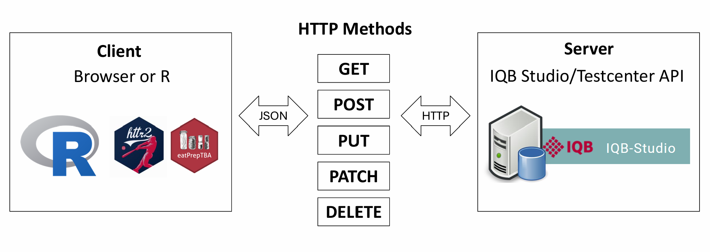
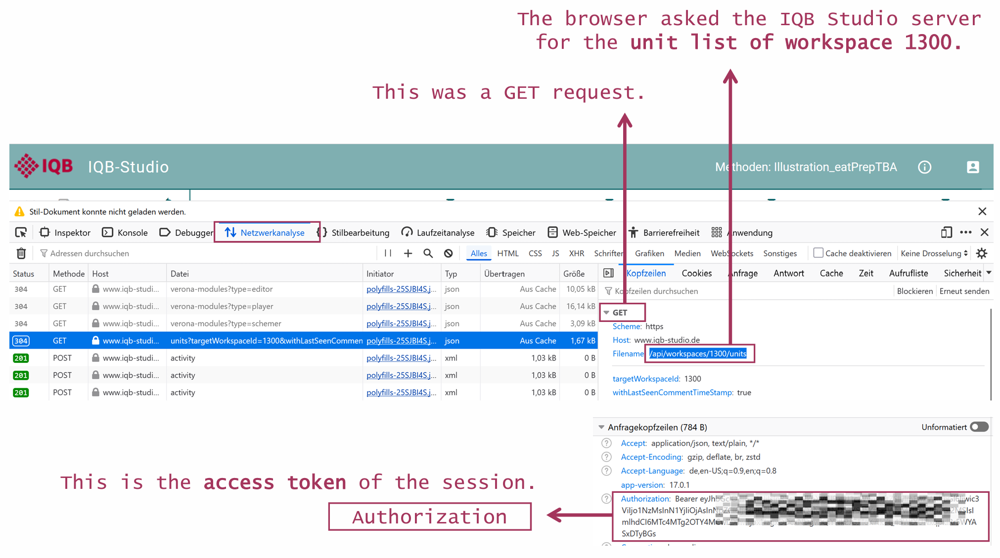
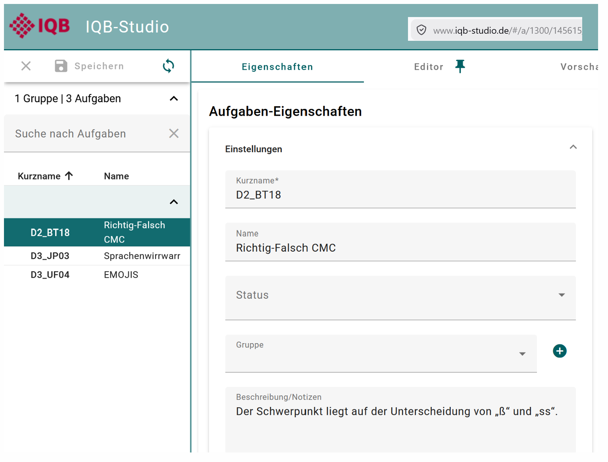
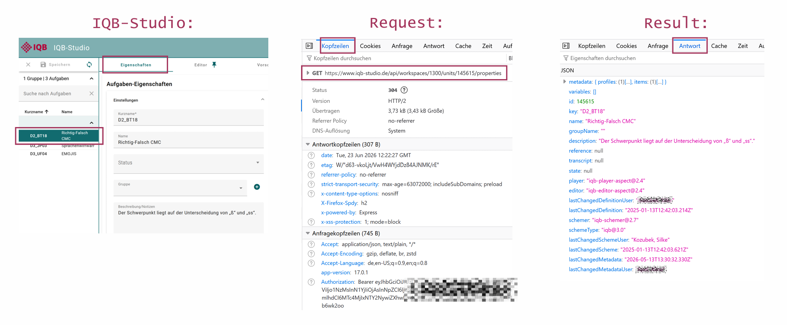
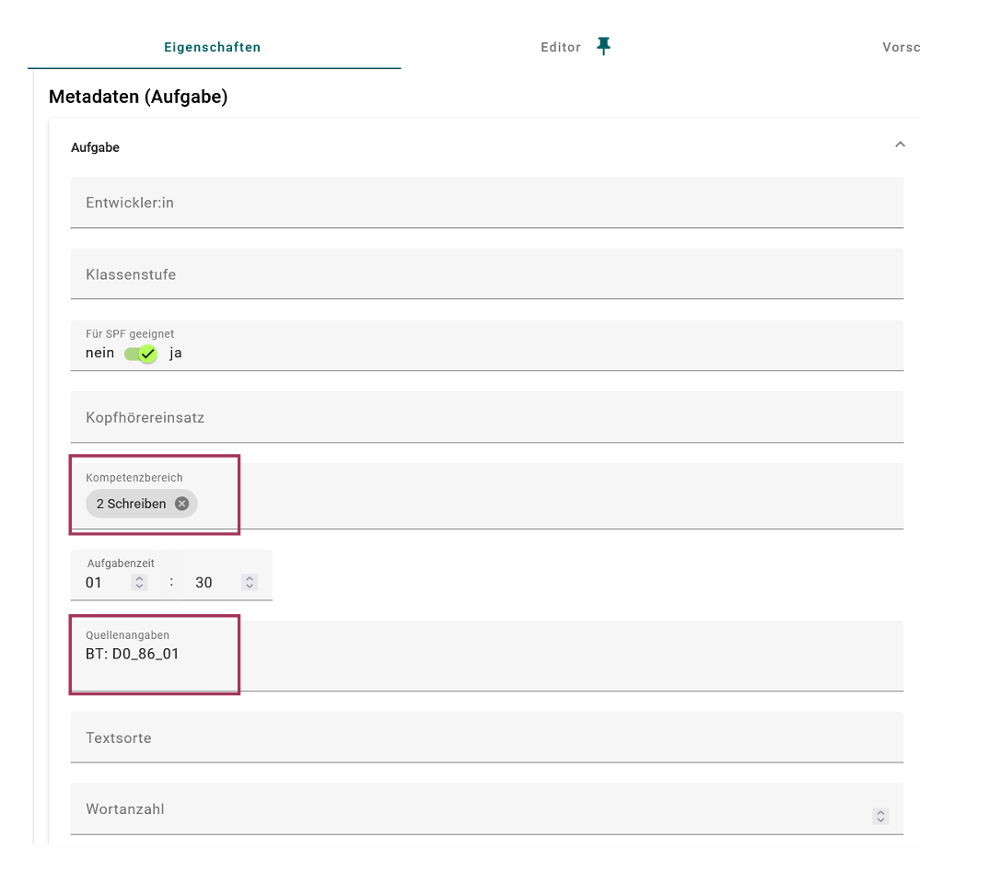
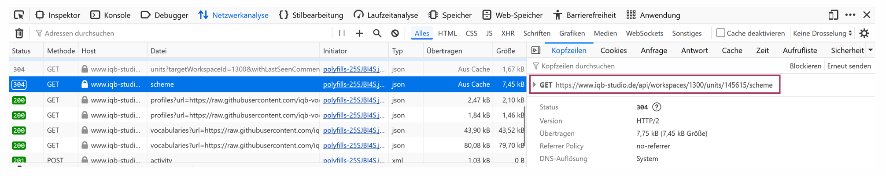
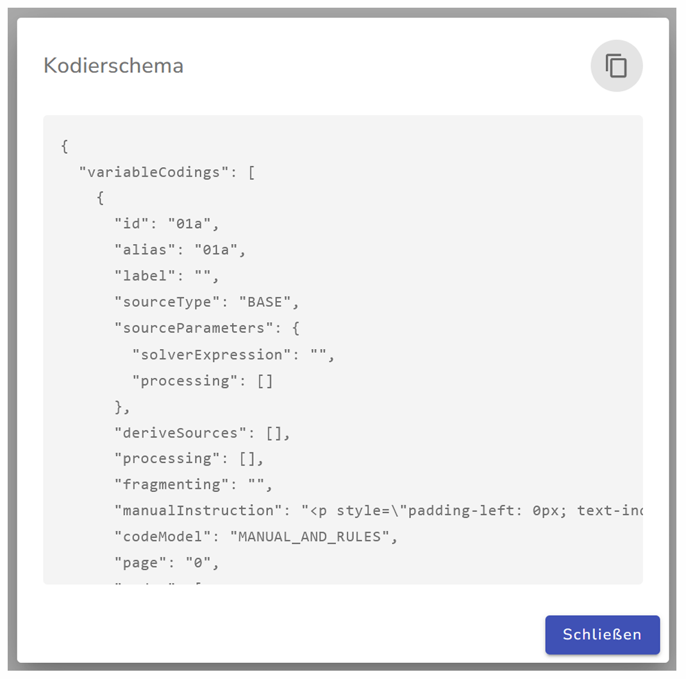
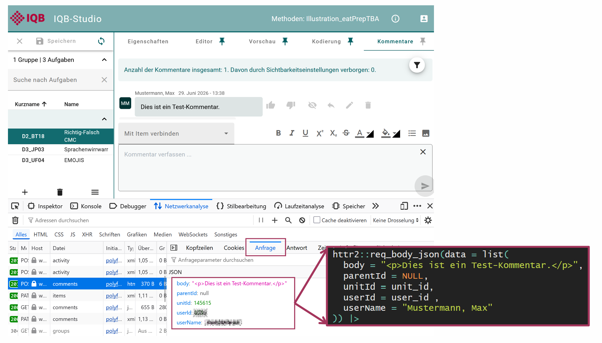
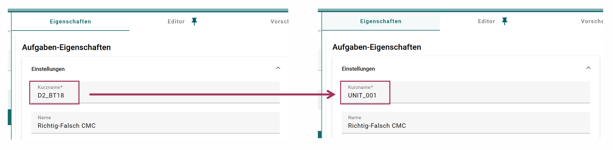

How eatPrepTBA communicates with IQB APIs
working-with-iqb-apis.RmdeatPrepTBA uses HTTP requests to retrieve and modify information from
IQB Studio and IQB Testcenter. These requests are sent with the R
package httr2. eatPrepTBA wraps them in higher-level
functions such as login_studio(),
login_testcenter(), access_workspace(),
list_units(), get_units(), or
prepare_codebook() so that users do not need to write
httr2 code directly.
HTTP requests
eatPrepTBA communicates with IQB Studio and IQB Testcenter through HTTP requests. An HTTP request is a message sent from a client to a server. In this context, the client can be the browser or R, and the server is the IQB Studio or IQB Testcenter API. The server processes the request and sends back an HTTP response.
Different types of requests are described by HTTP methods. The most
relevant methods for eatPrepTBA are GET, POST,
and PATCH.
A
GETrequest retrieves existing information from the API. For example, when eatPrepTBA retrieves the list of units in a workspace, unit properties, metadata, or a coding scheme, it sends aGETrequest. AGETrequest should not change anything on the server.A
POSTrequest sends data to the API in order to create something new. For example, posting a comment creates a new comment in the IQB Studio.A
PATCHrequest changes something that already exists. For example, changing the short name of a unit or changing the editor version modifies an existing unit.

Browser developer tools
To inspect the API requests sent by IQB Studio, open the browser developer tools. The developer tools make it possible to inspect the requests that are sent from the browser to the server.
They can usually be opened in one of the following ways:
-
Windows/Linux: press
F12orCtrl + Shift + I -
Mac: press
Cmd + Option + I - Any browser: right-click anywhere on the page and select Inspect
After opening the developer tools, switch to the Network tab. In German browser interfaces this tab may be called Netzwerkanalyse. When an action is performed in IQB Studio, for example selecting a workspace or opening a unit, the Network tab shows the corresponding API requests. Selecting one of these requests makes it possible to inspect the request URL, method, headers, and response.

In the Authorization header, the access token used for
the request appears in the form
Bearer <access-token>. You can use it for further
requests via httr2.
access_token <- "eyJhbGciOiJIUzI1NiI..."Access tokens
After logging in to IQB Studio (www.iqb-studio.de), the server generates an access token for the current session. This token must be sent with every subsequent request to the Studio API.
The token can be found in the browser developer tools: open the
developer tools, go to the Network tab, select an API request, and
inspect the request headers. In the Authorization header,
the token appears in the form
Bearer <access-token>.
When reproducing the request in R with httr2, this value
is passed with req_headers(). In eatPrepTBA, users normally
do not need to copy this token manually, because
login_studio() handles the login and stores the token for
later requests.
login <- eatPrepTBA::login_studio(app_version = "17.0.1")A simple GET request with httr2
The following example shows the basic structure of a request to the IQB Studio API. It retrieves the list of units from one workspace (in this case, workspace 1300).
httr2_result <- httr2::request("https://www.iqb-studio.de/api/") %>%
httr2::req_url_path_append("workspaces", 1300, "units") %>%
httr2::req_url_query(
targetWorkspaceId = 1300,
withLastSeenCommentTimeStamp = "true"
) %>%
httr2::req_headers(
"Authorization" = paste("Bearer", access_token),
"App-Version" = "17.0.1"
) %>%
httr2::req_perform() %>%
httr2::resp_body_json()The request starts from the Studio API base URL. The path
workspaces/{workspace_id}/units specifies that the unit
list of a specific workspace should be retrieved.
The Authorization header contains the bearer token that
was returned by Studio during login. The App-Version header
tells the API which Studio app version is used.
Because the response body is JSON, the request can be reproduced in R
with httr2 and parsed with
resp_body_json().
The result returned by httr2::resp_body_json() is an R
list created from the JSON response of the Studio API. In this example,
each top-level list element represents one unit in the selected
workspace. Each unit contains several fields, such as the unit id, key,
name, metadata, variables, timestamps, and information about
comments.
httr2_result[1]
#> [[1]]
#> [[1]]$metadata
#> named list()
#>
#> [[1]]$variables
#> list()
#>
#> [[1]]$id
#> [1] 145615
#>
#> [[1]]$key
#> [1] "D2_BT18"
#>
#> [[1]]$name
#> [1] "Richtig-Falsch CMC"
#>
#> [[1]]$groupName
#> [1] ""
#>
#> [[1]]$state
#> NULL
#>
#> [[1]]$lastChangedDefinitionUser
#> [1] "Max Mustermann"
#>
#> [[1]]$lastChangedDefinition
#> [1] "2025-01-13T12:42:03.214Z"
#>
#> [[1]]$lastChangedSchemeUser
#> [1] "Max Mustermann"
#>
#> [[1]]$lastChangedScheme
#> [1] "2025-01-13T12:42:03.621Z"
#>
#> [[1]]$lastChangedMetadata
#> [1] "2026-05-13T13:30:32.330Z"
#>
#> [[1]]$lastChangedMetadataUser
#> [1] "Max Mustermann"
#>
#> [[1]]$lastCommentChangedAt
#> [1] "1970-01-01T00:00:00.000Z"
#>
#> [[1]]$lastSeenCommentChangedAt
#> [1] "2022-07-01T00:00:00.000Z"
#>
#> [[1]]$targetWorkspaceId
#> NULL
#>
#> [[1]]$sourceWorkspaceId
#> NULL
#>
#> [[1]]$returned
#> [1] FALSE
eatPrepTBA transforms these nested lists into data frames or tibbles, so that the results are less nested, more consistent, and easier to use with common R workflows.
httr2_result %>%
purrr::list_transpose() %>%
tibble::as_tibble()
#> # A tibble: 3 × 18
#> metadata variables id key name groupName state
#> <list> <list> <int> <chr> <chr> <chr> <list>
#> 1 <named list [0]> <list [0]> 145615 D2_BT18 Richtig-Falsch CMC "" <NULL>
#> 2 <named list [0]> <list [0]> 145617 D3_JP03 Sprachenwirrwarr "" <NULL>
#> 3 <named list [0]> <list [0]> 145616 D3_UF04 EMOJIS "" <NULL>
#> # ℹ 11 more variables: lastChangedDefinitionUser <chr>,
#> # lastChangedDefinition <chr>, lastChangedSchemeUser <chr>,
#> # lastChangedScheme <chr>, lastChangedMetadata <chr>,
#> # lastChangedMetadataUser <chr>, lastCommentChangedAt <chr>,
#> # lastSeenCommentChangedAt <chr>, targetWorkspaceId <list>,
#> # sourceWorkspaceId <list>, returned <lgl>Retrieving unit properties and metadata
The unit list request shown above returns overview information about the units in a workspace. However, not all information that is visible in IQB Studio is included in this response. In particular, item metadata shown in Studio under Eigenschaften / Properties has to be retrieved with a separate API request.

In the Network tab, the properties request appears as a
GET request to
/api/workspaces/{workspace_id}/units/{unit_id}/properties.
In this example, the browser requests the properties of unit
145615 in workspace 1300. The request headers
show that the request is authenticated with an
Authorization header containing a bearer token and that the
Studio app version is sent with the app-version header. The
actual metadata returned by this request can be inspected in the
Response / Antwort tab.
In httr2, the request can be built in the same way as
the previous unit-list request, now requesting a specific unit and its
properties:
workspace_id <- 1300
unit_id <- 145615
properties <- httr2::request("https://www.iqb-studio.de/api/") %>%
httr2::req_url_path_append(
"workspaces", workspace_id,
"units", unit_id,
"properties"
) %>%
httr2::req_headers(
"Authorization" = paste("Bearer", access_token),
"App-Version" = "17.0.1"
) %>%
httr2::req_perform() %>%
httr2::resp_body_json()The response is again parsed with resp_body_json(). The
result is an R list created from the JSON response of the Studio
API.
The metadata is stored inside the properties response. The response
contains a metadata node, and inside this node there is an
items node. The individual items contain the metadata
fields that are shown in Studio under
Eigenschaften.
A simplified structure looks like this:
properties
|-- metadata
| |-- profiles # metadata for the unit as a whole
| | `-- profile
| | `-- entries # unit-level metadata fields
| `-- items # metadata for individual items
| `-- item 1
| |-- id
| |-- variableId
| |-- description
| `-- profiles
| `-- profile
| `-- entries # item-level metadata fields
|-- id
|-- key
|-- name
|-- description
|-- player
|-- editor
`-- ...For example, we can extract some unit-level metadata for the unit
145615 in workspace 1300.
# Kompetenzbereich
properties$metadata$profiles[[1]]$entries[[1]]$label[[1]]$value
#> [1] "Kompetenzbereich"
properties$metadata$profiles[[1]]$entries[[1]]$valueAsText[[1]]$value
#> [1] "2 Schreiben"
# Quellenangaben
properties$metadata$profiles[[1]]$entries[[5]]$label[[1]]$value
#> [1] "Quellenangaben"
properties$metadata$profiles[[1]]$entries[[5]]$valueAsText[[1]]$value
#> [1] "BT: D0_86_01"
Retrieving a coding scheme
The coding scheme of a unit can also be retrieved. In the browser developer tools, the corresponding request may already appear when opening or refreshing a unit, even if the Kodierung tab has not been selected manually.

The httr2 workflow is almost identical to the metadata
request: we need the workspace id, the unit id, the access token, and
the app version. Only the final part of the request path changes from
properties to scheme:
/api/workspaces/{workspace_id}/units/{unit_id}/scheme
workspace_id <- 1300
unit_id <- 145615
scheme_response <- httr2::request("https://www.iqb-studio.de/api/") %>%
httr2::req_url_path_append(
"workspaces", workspace_id,
"units", unit_id,
"scheme"
) %>%
httr2::req_headers(
"Authorization" = paste("Bearer", access_token),
"App-Version" = "17.0.1"
) %>%
httr2::req_perform() %>%
httr2::resp_body_json()The response from the API contains the coding scheme. In some cases, the scheme is not returned as a directly nested R list. Instead, it is stored as a JSON-formatted string inside the response.
scheme_string <- scheme_response$scheme
scheme_string#> {"variableCodings":[{"id":"01a","alias":"01a","label":"","sourceType":"BASE","sourceParameters":{"solverExpression":"","processing":[]},"deriveSources":[],"processing":[],"fragmenting":"","manualInstr ...If the coding scheme should be inspected or processed as an R object,
the JSON string can be parsed with
jsonlite::parse_json():
scheme_list <- jsonlite::parse_json(scheme_string)The result is then an R list. This makes it easier to inspect individual parts of the coding scheme with R.
str(scheme_list, max.level = 2)
#> List of 2
#> $ variableCodings:List of 6
#> ..$ :List of 12
#> ..$ :List of 12
#> ..$ :List of 12
#> ..$ :List of 12
#> ..$ :List of 12
#> ..$ :List of 12
#> $ version : chr "3.0"The parsed list can also be converted back to JSON. When doing this,
auto_unbox = TRUE is used so that single values are written
as JSON scalars instead of arrays of length one. This is important
because the Studio API scheme format expects values such as
"id": "01a" rather than "id": ["01a"].
scheme_json <- jsonlite::toJSON(
scheme_list,
auto_unbox = TRUE,
pretty = TRUE
)#> {
#> "variableCodings": [
#> {
#> "id": "01a",
#> "alias": "01a",
#> "label": "",
#> "sourceType": "BASE",
#> "sourceParameters": {
#> "solverExpression": "",
#> "processing": []
#> },
#> "deriveSources": [],
#> "processing": [],
#> "fragmenting": "",
#> "manualInstruction": "<p style=\"padding-left: 0px; text-indent: 0px; margin-bottom: 0px; margin-top: 0\" indentsize=\"20\">Das 1te Kästchen wurde angekreuzt<\/p><p style=\"padding-left: 0px; text-indent: 0px; margin-bottom: 0px; margin-top: 0\" indentsize=\"20\"><\/p>",
#> "codeModel": "NONE",
#> "page": "0",
#> "codes": [
#> {
#> "id": 1,
#> ...
The JSON representation can then be written to a file:
jsonlite::write_json(
scheme_list,
"scheme.json",
auto_unbox = TRUE,
pretty = TRUE
)In summary, not every response is immediately available as a conveniently nested R object. Sometimes the API returns JSON inside a string. In those cases, eatPrepTBA parses the string before the coding scheme can be handled like a regular R list.
Creating new data with POST requests
The previous examples used GET requests to retrieve
information from the Studio API. For a POST request, we set
httr2::req_method("POST").
A POST request sends data to the server in order to
create something new. One example is posting a new comment to a
unit.
/api/workspaces/{workspace_id}/units/{unit_id}/commentsIn addition to the request path and headers, the request needs a
body. This body is also called a payload. In German browser interfaces,
it may be shown as Anfrage. The body contains the data
that should be sent to the API. In this example, body
contains the text of the comment. parentId is used when
replying to an existing comment; for a new top-level comment, it can be
NULL.

In addition to the access_token, this manual example
also needs the user id that Studio sends when posting comments. It can
be inspected in the Payload tab of the corresponding browser
request.
user_id <- 12345The full request looks like this:
workspace_id <- 1300
unit_id <- 145615
httr2::request("https://www.iqb-studio.de/api/") %>%
httr2::req_method("POST") %>%
httr2::req_url_path_append(
"workspaces", workspace_id,
"units", unit_id,
"comments"
) %>%
httr2::req_headers(
"Authorization" = paste("Bearer", access_token),
"App-Version" = "17.0.1"
) %>%
httr2::req_body_json(data = list(
body = "<p>Dies ist ein Test-Kommentar.</p>",
parentId = NULL,
unitId = unit_id,
userId = user_id,
userName = "Mustermann, Max"
)) %>%
httr2::req_perform()In eatPrepTBA, users should usually not construct this request body manually. The package can use information from the Studio login, for example the logged-in user name, so that comments are not posted under a manually entered user name.
Changing existing data with PATCH requests
For a PATCH request, we set
httr2::req_method("PATCH"). A PATCH request is
used to change something that already exists. For example, changing the
short name of a unit modifies the existing unit properties:
/api/workspaces/{workspace_id}/units/{unit_id}/propertiesThe request body contains the fields that should be updated.
workspace_id <- 1300
unit_id <- 145615
httr2::request("https://www.iqb-studio.de/api/") %>%
httr2::req_method("PATCH") %>%
httr2::req_url_path_append(
"workspaces", workspace_id,
"units", unit_id,
"properties"
) %>%
httr2::req_headers(
"Authorization" = paste("Bearer", access_token),
"App-Version" = "17.0.1"
) %>%
httr2::req_body_json(data = list(
id = unit_id,
key = "UNIT_001"
)) %>%
httr2::req_perform()